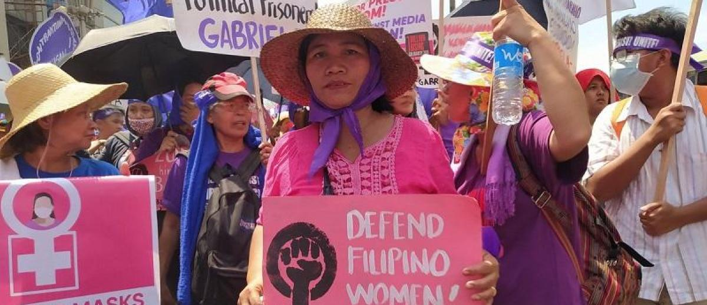

- The government must take stranger and more consistent action in implementing reproductive health care laws, ensuring that they are not just passed but are fully enforced and practiced by the people. It is essential to push for nationwide access to reproductive health services, especially in rural and marginalized communities as access to these services are more seen in urbanized cities.
- Promoting adolescent-friendly healthcare facilities and services, along with the implementation of comprehensive sex education not just in schools–but in home as well. It is equally important to encourage open conversations to break taboos surrounding menstruation, sexuality, and reproductive health in general. It is better to be informed than to go into the lion’s den unarmed. With this, education and awareness minimizes risky behaviors driven by curiosity, misinformation, or impulsive decision making, such as early or unwanted pregnancies.
- Urge for policy reforms that decriminalize abortion and prioritize women's health and autonomy. With unsafe abortions being one of the causes of high maternal mortality rate in the Philippines, reforming outdated laws is crucial to ensure that no woman is forced to risk her life for a medical need and that there is consent. In addition, promoting research and innovation focused on women’s reproductive health needs should be enforced. Due to the lack of local, gender-specific data and studies hinder the development of effective health care programs and policies.
Call to Action
